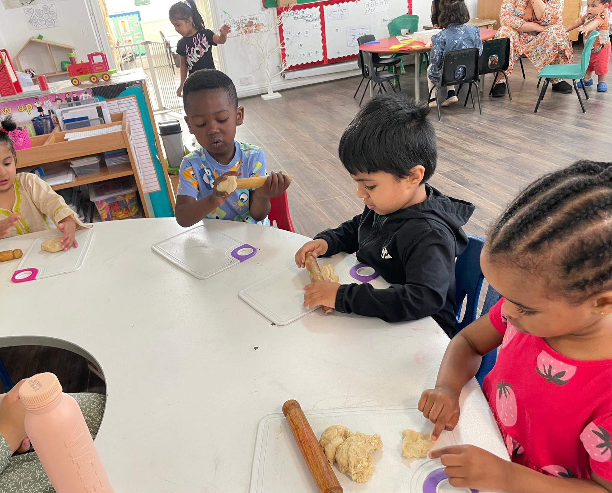
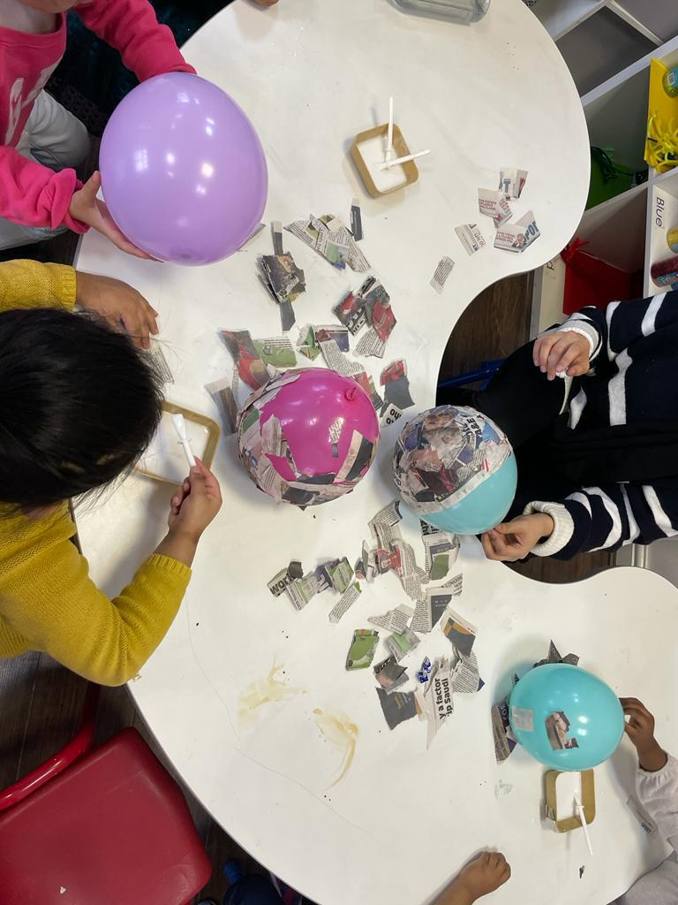

Choosing a nursery is rarely just a practical decision. It feels personal. Many parents searching for Lemon Tree Nursery reviews want to understand real experiences before trusting anyone with their child.
This article shares lived perspectives, shaped by common feedback and UK early years standards, to reflect the Lemon Tree Nursery experience in a clear, honest, and human way. If you want to learn more about their ethos, visit their About Us page for a full overview of the nursery’s values and history.
What Parents Really Say in Lemon Tree Nursery Reviews
Parents often describe a balanced picture rather than extremes. Across lemon tree nursery parent reviews, families highlight consistency, warmth, and routine. Instead of one perfect moment, they focus on how things feel week after week. This pattern matters because steady care often shapes a child’s confidence more than isolated events.
Many parents also mention trust. They talk about feeling comfortable leaving their child and noticing calm behaviour at home. This kind of feedback shapes the overall lemon tree nursery reputation, setting expectations before families even book a visit. For families curious about daily operations, it’s helpful to explore the Daily Routine page to see what children experience each day.
First Impressions: Enrolment, Communication, and Settling In
For most families, the journey starts with questions. Parents describe enrolment as smoother when staff respond promptly and explain routines simply. Early communication sets the tone for the whole parents’ experience with nursery, especially during those emotional first drop-offs. You can find more about registration and enrolment options on their Register form page.
Settling in is another key moment. Parents often notice whether staff acknowledge children’s emotions rather than rushing them. A smooth nursery settling-in process aligns with UK early years guidance on emotional security, as outlined in the EYFS framework on GOV.UK. That reassurance naturally leads parents to observe daily care more closely, which you can see reflected in their Sessions and Fees page, providing structured options for all age groups.
Quality of Care and Staff Interaction from a Parent’s Perspective
Once routines settle, attention shifts to people.

Many families describe caring nursery staff who greet children by name and notice small changes in mood. These details shape a positive parent preschool experience, especially for working parents who rely on trust. You can meet the team and learn more about the Key Persons system, which helps build these close bonds.
Parents often judge quality by behaviour. Children who talk positively about their day or show growing independence at home reinforce parents’ confidence. This focus on relationships reflects best practice highlighted by Ofsted, which stresses responsive interaction in early years care settings. For families curious about how these interactions link to learning, the Curriculum page offers a closer look at activity planning.

Learning, Play, and Daily Activities: Do They Meet Expectations?
Parents rarely expect formal lessons. Instead, they look for a play-based learning nursery where children explore naturally.
Feedback often mentions creative play, outdoor time, and a simple structure that supports early development without pressure. You can see examples of activities in the Gallery page, which shows children engaged in hands-on learning.
This approach aligns with research showing that early years learning experience works best through play and routine. According to the Department for Education, play supports language and social growth in young children.
Safety, Cleanliness, and Overall Nursery Environment
Safety remains non-negotiable. Parents frequently mention clean and well-maintained nursery spaces and clear entry procedures. These observations help families feel confident that standards are taken seriously every day. The nursery’s Health & Safety page outlines procedures, including hygiene protocols and outdoor supervision.
UK guidance from the NHS highlights the importance of nursery hygiene standards to reduce illness spread. When parents see these practices in action, it builds peace of mind and reinforces trust.
Communication with Parents: Updates, Feedback, and Transparency
Parents value being kept in the loop. Many mention daily nursery updates for parents who share meals, naps, or mood changes. This ongoing nursery communication with parents helps families feel involved even during busy workdays. The Feedback page highlights real parent experiences and testimonials that illustrate this transparency.
Good communication also supports early intervention. When concerns are shared quickly, parents feel respected. This reflects guidance on partnership with parents in early years settings. For parents considering visits or questions, the Contact Us page provides a simple way to reach staff.
Common Praise vs Common Concerns in Lemon Tree Nursery Reviews
Praise often centres on staff warmth, routine consistency, and child happiness. Parents describe friendly nursery teachers and a supportive nursery environment that helps children feel secure.
Concerns, when mentioned, usually relate to individual preferences rather than quality. Some parents want more updates or slightly different routines. Experienced families recognise that no nursery suits everyone. Exploring Policy Statements helps parents understand how standards are maintained and expectations are set.
How Lemon Tree Nursery Compares to Other Local Preschools
Parents comparing nurseries often focus on care quality, communication style, and value for money. Rather than facilities alone, families assess how staff treat children and how supported parents feel.
|
Aspect parents compare |
Lemon Tree focus |
Typical local comparison |
|
Staff interaction |
Relationship-led care |
More structured |
|
Communication |
Regular informal updates |
Formal reports |
|
Learning approach |
Play-based routine |
Mixed approaches |
|
Safety & hygiene |
Strict and observed |
Varied |
Parents can also explore the School Transitions page to see how the nursery prepares children for the move to primary school.
FAQs
What do parents say about Lemon Tree Nursery?
Most families highlight consistency, caring staff, and clear daily routines that help children feel secure. Parents often mention that this steady approach builds confidence over time and reduces anxiety for both children and families.
Is Lemon Tree Nursery good for my child?
Parents say it suits children who benefit from emotional reassurance and predictable structure. Many families notice their child becoming calmer, more settled, and more confident as routines and relationships develop.
How do parents rate communication with staff?
Feedback often mentions regular updates and approachable staff who are easy to talk to. Parents appreciate being kept informed about their child’s day and feel comfortable raising questions or concerns when needed.
Is Lemon Tree Nursery worth it compared to others?
Many parents feel the value lies in care quality, trust, and emotional support rather than just facilities. Families often say peace of mind and consistent care matter more than extra features.
Does Lemon Tree Nursery help children settle in gently?
Parents frequently mention a patient and understanding approach during the settling-in period. Children are given time to adjust at their own pace, which helps reduce stress and builds emotional security.